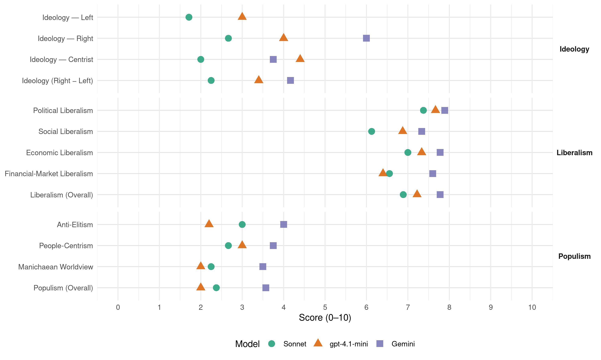

TS-LKD (Lithuania, 2012)
manifesto_id 88621_201210
Get full text: This site shows derived annotations and short verbatim quotes only. The full manifesto text is © Manifesto Project / WZB — obtain it via manifesto-project.wzb.eu using the manifesto_id above.
Headline scores
| Dimension | Sonnet | gpt-4.1-mini | Gemini |
|---|---|---|---|
| Populism (Overall) | 2.4 | 2.0 | 3.6 |
| Anti-Elitism | 3.0 | 2.2 | 4.0 |
| People-Centrism | 2.7 | 3.0 | 3.8 |
| Manichaean Worldview | 2.2 | 2.0 | 3.5 |
| Ideology (Right − Left) | 2.2 | 3.4 | 4.2 |
| Liberalism (Overall) | 6.9 | 7.2 | 7.8 |
| Political Liberalism | 7.4 | 7.7 | 7.9 |
| Social Liberalism | 6.1 | 6.9 | 7.3 |
| Economic Liberalism | 7.0 | 7.3 | 7.8 |
| Financial-Market Liberalism | 6.6 | 6.4 | 7.6 |
Evidence per dimension
Economic Liberalism
Gemini · score 9.0 · verified · chunk 1
“remsime smulkų ir vidutinį verslą”
darbo vietų kūrimu“ arba „remsime smulkų ir vidutinį verslą“. Mes tokių bendrybių kartojimo nebegalime
Gemini · score 9.0 · verified · chunk 2
“tik verslas gali kurti naujas darbo vietas”
Vyriausybė nuosekliai laikėsi nuostatos, kad tik verslas gali kurti naujas darbo vietas – tiesioginis valstybės dalyvavimas
Gemini · score 8.0 · verified · chunk 3
“valstybinis reguliavimas yra kraštutinė priemonė”
Tad ir toliau veiksime pagal nuostatą, kad valstybinis reguliavimas yra kraštutinė priemonė. Iki jos imantis
Gemini · score 8.0 · verified · chunk 4
“gerinamos sąlygos verslo plėtrai”
Pirmiausia - turi būti gerinamos sąlygos verslo plėtrai, kad prarastos darbo vietos būtų pakeičiamos
Gemini · score 7.0 · verified · chunk 5
“būstą rinkos sąlygomis galėtų nuomotis iš”
Tokiu būdu gyventojai būstą rinkos sąlygomis galėtų nuomotis iš fizinių ar privačių juridinių asmenų.
Gemini · score 7.0 · verified · chunk 6
“energetikos sektoriaus liberalizavimo reformas”
Lietuvos Vyriausybė sparčiai įgyvendina ES lygiu inicijuotas energetikos sektoriaus liberalizavimo reformas, tačiau ES iki šiol neturi visavertės
Gemini · score 7.0 · verified · chunk 7
“skatindami lietuviškos produkcijos eksportą ir investicijas”
Kursime palankias ekonominio bendradarbiavimo sąlygas, skatindami lietuviškos produkcijos eksportą ir investicijas Baltijos kaimynėse
Gemini · score 8.0 · verified · chunk 8
“skatinti privačių institucijų steigimąsi”
Siūlomos pokyčių iniciatyvos:valstybės finansiniais, organizaciniais, teisiniais instrumentais skatinti privačių institucijų steigimąsi; pagal atskirą valstybės
Gemini · score 7.0 · verified · chunk 9
“skatinti privačią iniciatyvą šioje srityje”
kitomis šalimis. Būtina skatinti privačią iniciatyvą šioje srityje, tiek puoselėjant
gpt-4.1-mini · score 8.0 · verified · chunk 1
“konkurencingą ekonomiką”
…„XVI Vyriausybės programa“ – tai aiškus mūsų šalies konservatyvios modernizacijos planas, kuriame siekis Lietuvos ekonomiką paversti globaliai konkurencinga dera su konservatyviu rūpestį išsaugoti tradicinę šeimą ir sustiprinti mūsų bendruomenes…
gpt-4.1-mini · score 9.0 · verified · chunk 2
“Konkurencija yra didžiulė jėga, gebanti užtikrinti vartotojams geriausią kainos ir kokybės santykį”
…Priimsime sprendimus, palankius konkurencijai Konkurencija yra didžiulė jėga, gebanti užtikrinti vartotojams geriausią kainos ir kokybės santykį, taigi didinanti visų rinkos dalyvių efektyvumą. Nuosekliai sieksime išlaikyti konkurenciją ir užtikrinti, kad mūsų verslas turėtų lygias galimybes konkuruoti ES rinkoje…
gpt-4.1-mini · score 8.0 · verified · chunk 3
“verslo savireguliaciją”
…Skatinsime verslo savireguliaciją. Visuomenėje ir verslo bendruomenėje vis dar yra labai įsigalėjęs geidžiamo efektyvaus valstybinio reguliavimo mitas… ES ir JAV jau nuo seno susiformavusios verslo savireguliacijos tradicijos… Tai prisideda prie darnios, pasitikėjimu grįstos bendruomenės plėtros.
gpt-4.1-mini · score 7.0 · verified · chunk 4
“Mažųjų bendrijų įmonių įstatymas, numatantis mokestines lengvatas”
Siekiant skatinti šeimos verslą buvo priimtas Mažųjų bendrijų įmonių įstatymas, numatantis mokestines lengvatas norintiems kurti šeimos verslą.
gpt-4.1-mini · score 6.0 · verified · chunk 5
“biudžeto programų sumažinta net tris kartus – nuo 596-ių 2009 metais iki 226-ių 2012 metais”
Gerokai sumažinome strateginių planų ir biudžeto programų skaičių. Biudžeto programų sumažinta net tris kartus – nuo 596-ių 2009 metais iki 226-ių 2012 metais. Planavimo dokumentų sumažinta perpus (nuo 260 iki 150). Supaprastinome strateginio planavimo procedūras ir atsisakėme perteklinių reikalavimų.
gpt-4.1-mini · score 7.0 · verified · chunk 6
“ekonominė diplomatija padėjo Lietuvai vienai pirmųjų Europoje įveikti ekonominę krizę”
2.2.Ekonominė diplomatija padėjo Lietuvai vienai pirmųjų Europoje įveikti ekonominę krizę. Per ambasadų ir verslo atstovybių tinklą keli šimtai užsienio kompanijų buvo pakviestos investuoti Lietuvoje, surengtas triženklis skaičius susitikimų su užsienio verslo atstovais, inicijuota ir jau įgyvendinama kelios dešimtys investicinių projektų.
gpt-4.1-mini · score 7.0 · verified · chunk 7
“skatinant skaidrią, Baltarusijos visuomenei priimtiną ūkio privatizaciją”
Šiandieninių Baltarusijos ūkio ir posovietinių problemų akivaizdoje šalies nepriklausomybę išgelbėtų parama Vakarų finansiniais instrumentais, skatinant skaidrią, Baltarusijos visuomenei priimtiną ūkio privatizaciją.
gpt-4.1-mini · score 7.0 · verified · chunk 8
“valstybės finansavimas skiriamas ne aukštojo mokslo įstaigoms, o studentams”
Aukštojo mokslo reforma – valstybės finansavimas skiriamas ne aukštojo mokslo įstaigoms, o studentams, todėl studijuojantieji studijų krepšelį gali neštis į bet kurią (valstybinę arba privačią) Lietuvos aukštąją mokyklą.
gpt-4.1-mini · score 7.0 · verified · chunk 9
“Skirsime ypatingą dėmesį Pietryčių Lietuvos socialinei ir ekonominei raidai”
Skirsime ypatingą dėmesį Pietryčių Lietuvos socialinei ir ekonominei raidai, kursime ir finansuosime atitinkamas investicines programas. Patvirtinome Vilniaus apskrities rajonų socialinės ir ekonominės plėtros 2011-2014 metų priemonių planą, kuriame numatyta visa eilė priemonių skatinti Vilniaus apskrities gyventojų verslumą, pritraukti privačias investicijas, sudaryti sąlygas kurti naujas darbo vietas, gerinti socialinę ir ekonominę infrastruktūrą.
Sonnet · score 8.0 · verified · chunk 1
“Atidarysime rinkai sveikatos, švietimo ir socialinių paslaugų sektorius”
3.1.1 Atidarysime rinkai sveikatos, švietimo ir socialinių paslaugų sektorius
Sonnet · score 9.0 · verified · chunk 2
“Konkurencija yra didžiulė jėga”
Konkurencija yra didžiulė jėga, gebanti užtikrinti vartotojams geriausią kainos ir kokybės santykį, taigi didinanti visų rinkos dalyvių efektyvumą
Sonnet · score 7.0 · verified · chunk 3
“valstybinis reguliavimas yra kraštutinė priemonė”
Tad ir toliau veiksime pagal nuostatą, kad valstybinis reguliavimas yra kraštutinė priemonė. Iki jos imantis skatinsime verslą kurti savivaldos organizacijas
Sonnet · score 6.0 · verified · chunk 4
“mažinti darbo jėgos mokestinius kaštus”
mažinti darbo jėgos mokestinius kaštus, nedarant neigiamo poveikio biudžetui, integruotai ir nuosekliai susieti sutartinius darbo santykius
Sonnet · score 7.0 · verified · chunk 5
“paslaugų teikimo srityje bus daugiau konkurencijos”
Nuosekliai sieksime, kad valdžios institucijos teiktų tik tas paslaugas, kurių negali teikti nevyriausybinės organizacijos, bendruomenės ar privatus sektorius. Paslaugų teikimo srityje bus daugiau konkurencijos ir pasirinkimo galimybių.
Sonnet · score 7.0 · verified · chunk 6
“energetikos sektoriaus liberalizavimo reformas”
sparčiai įgyvendina ES lygiu inicijuotas energetikos sektoriaus liberalizavimo reformas
Sonnet · score 7.0 · verified · chunk 7
“skatinant skaidrią, Baltarusijos visuomenei priimtiną ūkio privatizaciją”
šalies nepriklausomybę išgelbėtų parama Vakarų finansiniais instrumentais, skatinant skaidrią, Baltarusijos visuomenei priimtiną ūkio privatizaciją
Sonnet · score 6.0 · verified · chunk 8
“pritraukti privačias investicijas”
skatinti Vilniaus apskrities gyventojų verslumą, pritraukti privačias investicijas, sudaryti sąlygas kurti naujas darbo vietas
Sonnet · score 6.0 · verified · chunk 9
“skatinti privačią iniciatyvą šioje srityje”
Būtina skatinti privačią iniciatyvą šioje srityje, tiek puoselėjant kultūros mecenatystės tradicijas, tiek diegiant privačios ir viešos partnerystės (PPP) modelį.
Financial-Market Liberalism
Gemini · score 8.0 · verified · chunk 1
“privataus kapitalo rinka, taip reikalinga įmonių augimui”
Vyriausybės pastangomis ir lėšomis suaktyvinta privataus kapitalo rinka, taip reikalinga įmonių augimui finansuoti ir užtikrinti.
Gemini · score 8.0 · verified · chunk 2
“dalį valstybės valdomų įmonių akcijų palaipsniui listinguosime akcijų biržose”
Nuosavybės gairėse – suburtos profesionalios įmonių valdybos, užtikrinamas skaidrumas. Nustatysime ilgalaikį – 2-5 metų planą, pagal kurį dalį valstybės valdomų įmonių akcijų palaipsniui listinguosime akcijų biržose. Tai pagerins įmonių skaidrumą, jų valdymą.
Gemini · score 7.0 · verified · chunk 3
“investuotojų teisių apsauga, informacijos atskleidimu”
kompanijų gero valdymo praktika, susijusi su investuotojų teisių apsauga, informacijos atskleidimu ir valdybų formavimu.
Gemini · score 8.0 · verified · chunk 4
“privačių kaupiamųjų pensijų fondų plėtrą”
toliau pasisakome už privačių kaupiamųjų pensijų fondų plėtrą.
Gemini · score 7.0 · verified · chunk 7
“parama Vakarų finansiniais instrumentais, skatinant skaidrią”
šalies nepriklausomybę išgelbėtų parama Vakarų finansiniais instrumentais, skatinant skaidrią, Baltarusijos visuomenei priimtiną
gpt-4.1-mini · score 7.0 · verified · chunk 1
“skolinimosi reitingais”
…Tai pasireiškia mažėjančia premija, kurią turime sumokėti už skolinimąsi tarptautinėse finansų rinkose, ir mažėjančia skolos kaina bei stabiliais skolinimosi reitingais…
gpt-4.1-mini · score 7.0 · verified · chunk 2
“palaipsniui listinguosime akcijų biržose. Tai pagerins įmonių skaidrumą, jų valdymą. Kartu tai duos naujos finansinės energijos biržai”
…Nustatysime ilgalaikį – 2-5 metų planą, pagal kurį dalį valstybės valdomų įmonių akcijų palaipsniui listinguosime akcijų biržose. Tai pagerins įmonių skaidrumą, jų valdymą. Kartu tai duos naujos finansinės energijos biržai, o jos gyvybingumas labai svarbus plėtojant nebankinį verslo finansavimą…
gpt-4.1-mini · score 6.0 · verified · chunk 3
“finansų sistemos valdymą”
…likvidavo visuomenės interesams netarnavusią „Leo LT“ bendrovę ir sugrąžino valstybei elektros energetikos sektoriaus valdymą; sėkmingai užbaigė derybas su Europos Komisija dėl Baltijos energijos rinkos jungčių plano (BEJP/BEMIP), pasiekė, kad šį planą patvirtintų Europos Sąjunga ir kad jis taptų ES energetikos integralios infrastruktūros plėtros strategijos sudėtine dalimi;
gpt-4.1-mini · score 6.0 · verified · chunk 4
“Steigsime „Sodros“ fondo rezervą”
Reikia pripažinti, kad nedarbo problema, ir ypač jaunimo nedarbo, išgyvenant ekonominės ir finansų krizės padarinius, reikalauja ypatingos skubos sprendimų. … Steigsime „Sodros“ fondo rezervą, kurio lėšos galės būti panaudojamos tik būsimoms visuomenės senėjimo problemoms spręsti, t.y. nuo ekonominių sukrėtimų apsaugotos pensijos – sukauptas rezervo fondas prie „Sodros“ leidžia mokėti tokias pensijas, kokios paskirtos, nepaisant ekonominės padėties.
gpt-4.1-mini · score 5.0 · mixed · chunk 5
“priimti įstatymų pataisas, reikalaujančias, kad valstybės tarnautojai privalo pagrįsti įsigytą turtą teisėtomis pajamomis”
Siekiama veiksmingos korupcinių nusikaltimų valstybės tarnyboje prevencijos ir ryškesnio tokių nusikaltimų sumažėjimo, Permainų koalicija užsibrėžė tikslą priimti įstatymų pataisas, reikalaujančias, kad valstybės tarnautojai privalo pagrįsti įsigytą turtą teisėtomis pajamomis ir taip įrodyti, kad sąžiningai tarnauja valstybei.
gpt-4.1-mini · score 6.0 · verified · chunk 6
“Lietuva turi prisidėti prie bendro siekio koncentruoti ES paramą į Europos ateičiai ir augimui naudingiausius projektus”
Dalyvaudama šešias ES valstybes (Lietuvą, Latviją, Estiją, Suomiją, Švediją ir Vokietiją) vienijančios neformalios „išmanaus augimo“ grupės veikloje, Lietuva turi prisidėti prie bendro siekio koncentruoti ES paramą į Europos ateičiai ir augimui naudingiausius projektus.
Sonnet · score 7.0 · verified · chunk 1
“suaktyvinta privataus kapitalo rinka”
Vyriausybės pastangomis ir lėšomis suaktyvinta privataus kapitalo rinka, taip reikalinga įmonių augimui finansuoti ir užtikrinti.
Sonnet · score 8.0 · verified · chunk 2
“rizikos kapitalo fondus, kai fondai investuoja lėšas”
Aktyviai veiksime per rizikos kapitalo fondus, kai fondai investuoja lėšas į įmonės kapitalą. Šie fondai į įmones atneša vadybinius gebėjimus
Sonnet · score 7.0 · verified · chunk 3
“investuotojų teisių apsauga, informacijos atskleidimu”
Bendrovių valdysena – kompanijų gero valdymo praktika, susijusi su investuotojų teisių apsauga, informacijos atskleidimu ir valdybų formavimu.
Sonnet · score 6.0 · verified · chunk 4
“privačių kaupiamųjų pensijų fondų plėtrą”
toliau pasisakome už privačių kaupiamųjų pensijų fondų plėtrą. Būdami valdžioje anksčiau mes inicijavome šių fondų atsiradimą.
Sonnet · score 7.0 · verified · chunk 5
“sumažės įkeitimo ir paskolos gavimo kaštai”
Taigi sutrumpės biurokratinės procedūros ir sumažės įkeitimo ir paskolos gavimo kaštai. Priimtas Hipotekos įstatymas supaprastins ir atpigins įkeisto turto išieškojimo procedūrą
Sonnet · score 6.0 · verified · chunk 6
“ūkio privatizaciją”
skatinant skaidrią, Baltarusijos visuomenei priimtiną ūkio privatizaciją
Sonnet · score 6.0 · verified · chunk 7
“parama Vakarų finansiniais instrumentais”
šalies nepriklausomybę išgelbėtų parama Vakarų finansiniais instrumentais, skatinant skaidrią ūkio privatizaciją
Sonnet · score 6.0 · verified · chunk 8
“palankesnėmis negu rinkos sąlygomis pasiskolinti”
sukurta valstybės remiamų paskolų sistema (studentai gali palankesnėmis negu rinkos sąlygomis pasiskolinti lėšų mokamoms studijoms
Sonnet · score 6.0 · verified · chunk 9
“privačias investicijas, sudaryti sąlygas kurti”
skatinti Vilniaus apskrities gyventojų verslumą, pritraukti privačias investicijas, sudaryti sąlygas kurti naujas darbo vietas
Political Liberalism
Gemini · score 8.0 · verified · chunk 1
“Seimo 2012 m. ratifikuotą Fiskalinės drausmės sutartį”
Nuosekliai įgyvendindami Seimo 2012 m. ratifikuotą Fiskalinės drausmės sutartį, atitinkamuose įstatymuose įtvirtinsime
Gemini · score 8.0 · verified · chunk 2
“Vyriausybė ir Seimas skyrė didelį dėmesį”
skausmingumas nesumažėja. Vyriausybė ir Seimas skyrė didelį dėmesį nedarbo problemoms spręsti – pradedant
Gemini · score 8.0 · verified · chunk 3
“Konstituciniam Teismui priėmus sprendimą”
Konstituciniam Teismui priėmus sprendimą dėl šeimos sąvokos bei sustabdžius
Gemini · score 7.0 · verified · chunk 4
“Lietuvos Respublikos Konstitucijos 38 straipsnio”
Lietuvos Respublikos Konstitucijos 38 straipsnio nuostata sako kad šeima – visuomenės ir valstybės pagrindas
Gemini · score 8.0 · verified · chunk 5
“teisėkūros procedūras į viešą elektroninę erdvę”
teisėkūros proceso tobulinimo srityje buvo… perkelti teisėkūros procedūras į viešą elektroninę erdvę ir užtikrinti
Gemini · score 8.0 · verified · chunk 6
“pagal valdžių padalijimo principą”
kam pavaldus Policijos departamentas. Pagal valdžių padalijimo principą Respublikos Prezidentas kaip valstybės vadovas
Gemini · score 8.0 · verified · chunk 7
“demokratinę už valstybės saugumą atsakingų institucijų veiklos kontrolę”
siekiant įtakoti politinius bei ekonominius procesus bei pažeidžiant demokratinę už valstybės saugumą atsakingų institucijų veiklos kontrolę ir
Gemini · score 8.0 · verified · chunk 8
“demokratinę bei parlamentinę kontrolės”
valstybės įstatymus interpretavo savo nuožiūra ir vengė demokratinės bei parlamentinės kontrolės. Tai leido ne tik plėstis korupciniams
Gemini · score 8.0 · verified · chunk 9
“žmonių teisės į demokratiją ir teisingumą”
skirstymo tvarka nepažeidžia čia gyvenančių žmonių teisės į demokratiją ir teisingumą, ar neskatina
gpt-4.1-mini · score 8.0 · verified · chunk 1
“Seimo 2012 m. ratifikuotą Fiskalinės drausmės sutartį”
…Nuosekliai įgyvendindami Seimo 2012 m. ratifikuotą Fiskalinės drausmės sutartį, atitinkamuose įstatymuose įtvirtinsime: - teisiškai įpareigojančius vidutinės trukmės viešųjų pajamų ir viešųjų išlaidų, deficito ir skolos rodiklius…
gpt-4.1-mini · score 8.0 · verified · chunk 2
“Dviejų datų taisyklė, kai visi verslo sąlygas keičiantys teisės aktai įsigalioja tik gegužės 1 d. ir lapkričio 1 d.”
…pasitikėjimą valstybės sprendimais. Tam būta daug priežasčių. Tačiau nepasitikėjimas institucijomis yra viena svarbių problemų, kurias turime išspręsti, jei norime gyventi klestinčioje šalyje. Dviejų datų taisyklė, kai visi verslo sąlygas keičiantys teisės aktai įsigalioja tik gegužės 1 d. ir lapkričio 1 d., o ne bet kurią metų dieną, yra žingsnis ta kryptimi. Tačiau dar turime užtikrinti, kad visos institucijos be išimčių laikytųsi šių taisyklių…
gpt-4.1-mini · score 7.0 · verified · chunk 3
“priimamose įstatyminiuose aktuose buvo nuosekliai įtvirtinamas šeimos puoselėjimo ir pagarbos jai prioritetas”
…Iš nevyriausybinių organizacijų (NVO) atstovų prie Seimo Socialinių reikalų ir darbo komiteto sukurta šio susitarimo įgyvendinimo priežiūros taryba, sistemiškai analizuojanti susitarimo įgyvendinimą ir teikianti pasiūlymus Vyriausybei bei Seimui. Visoje viešojoje erdvėje, priimamose įstatyminiuose aktuose buvo nuosekliai įtvirtinamas šeimos puoselėjimo ir pagarbos jai prioritetas.
gpt-4.1-mini · score 7.0 · verified · chunk 4
“Konstitucijos pataisą”
Konstituciniam Teismui priėmus sprendimą dėl šeimos sąvokos bei sustabdžius Nacionalinės šeimos koncepcijos veikimą, buvome aktyvūs iniciatoriai ruošiant reikalingą Konstitucijos pataisą.
gpt-4.1-mini · score 8.0 · verified · chunk 5
“užtikrinti valstybės ir savivaldybių institucijų ir įstaigų veiklos viešumą”
Pagrindiniai uždaviniai teisėsaugos ir viešojo administravimo institucijų veiklos srityje: užtikrinti valstybės ir savivaldybių institucijų ir įstaigų veiklos (priimamų sprendimų, viešųjų finansų naudojimo, išduodamų dokumentų, teikiamų paslaugų) viešumą, užtikrinti didesnį visuomenės atstovų dalyvavimą teisėjų skyrimo ir įvesti jį teisingumo vykdymo procese,
gpt-4.1-mini · score 8.0 · verified · chunk 6
“užtikrinti valstybės ir savivaldybių institucijų ir įstaigų veiklos (priimamų sprendimų, viešųjų finansų naudojimo, išduodamų dokumentų, teikiamų paslaugų) viešumą”
Pagrindiniai uždaviniai teisėsaugos ir viešojo administravimo institucijų veiklos srityje: užtikrinti valstybės ir savivaldybių institucijų ir įstaigų veiklos (priimamų sprendimų, viešųjų finansų naudojimo, išduodamų dokumentų, teikiamų paslaugų) viešumą, užtikrinti didesnį visuomenės atstovų dalyvavimą teisėjų skyrimo ir įvesti jį teisingumo vykdymo procese, priimti Seime svarstomą Policijos veiklos įstatymo projektą, parengti ir priimti visai statutinei valstybės tarnybai bendrą Statutinės valstybės tarnybos įstatymą, parengti ir priimti visų ombudsmenų institucijų veiklą reglamentuojantį konstitucinį įstatymą.
gpt-4.1-mini · score 8.0 · verified · chunk 7
“Demokratija, pagarba žmogui, istorinė atmintis ir teisingumas”
Vertybinė politika – tai daugiau nei papildoma programinė Lietuvos užsienio politikos kryptis. Demokratija, pagarba žmogui, istorinė atmintis ir teisingumas yra pagrindinis politinių skaičiavimų matas, galiojantis visiems aukščiau išdėstytiems užsienio politikos prioritetams.
gpt-4.1-mini · score 7.0 · verified · chunk 8
“Vyriausybė kartu su Seimu ir Prezidentu tapo atsakingi už užduočių formulavimą VSD”
Valstybės saugumo departamento išlaisvintas nuo nekonstitucinių įtakų, sukurtas užduočių nustatymo ir atskaitomybės mechanizmas. Vyriausybė kartu su Seimu ir Prezidentu tapo atsakingi už užduočių formulavimą VSD.
gpt-4.1-mini · score 8.0 · verified · chunk 9
“Lietuvos Respublikos Seimas savo nutarimu patvirtino dar 1998 metais”
Lietuvos sveikatos programoje, kurią Lietuvos Respublikos Seimas savo nutarimu patvirtino dar 1998 metais, buvo aiškiai suformuluota, ką Lietuva turi pasiekti iki 2010-ųjų metų gerinant Lietuvos žmonių sveikatą ir gyvenimo kokybę, kokiu keliu reikia toliau reformuoti sveikatos sistemą, kad ji būtų kokybiška ir visiems vienodai prieinama.
Sonnet · score 7.0 · verified · chunk 1
“Fiskalinės drausmės sutartį”
Nuosekliai įgyvendindami Seimo 2012 m. ratifikuotą Fiskalinės drausmės sutartį, atitinkamuose įstatymuose įtvirtinsime
Sonnet · score 7.0 · verified · chunk 2
“skaidrumą, atskaitingumą, paslaugų teikimo efektyvumą”
Socialinių paslaugų sektoriuje diegsime skaidrumą, atskaitingumą, paslaugų teikimo efektyvumą, atversime sektorių konkurencijai
Sonnet · score 7.0 · verified · chunk 3
“Konstitucijai”
įtvirtinantis Lietuvos elektros perdavimo sistemą į posovietinę energetinę sąjungą, todėl net prieštaraujantis Konstitucijai. Vakarų skirstomieji tinklai buvo perleisti
Sonnet · score 8.0 · verified · chunk 5
“skaidrumo didinimas bei korupcijos prielaidų mažinimas”
Vienas pagrindinių Permainų koalicijos uždavinių kovos su korupcija srityje ir buvo skaidrumo didinimas bei korupcijos prielaidų mažinimas sveikatos apsaugos, viešųjų pirkimų ir statybos priežiūros srityse.
Sonnet · score 8.0 · verified · chunk 6
“visuomenės atstovų dalyvavimą teisėjų skyrimo”
užtikrinti didesnį visuomenės atstovų dalyvavimą teisėjų skyrimo ir įvesti jį teisingumo vykdymo procese
Sonnet · score 8.0 · verified · chunk 7
“demokratijos ir teisės viršenybės principų”
Lietuva turi solidarizuotis su demokratijos ir teisės viršenybės principų siekiančia rusų visuomene
Sonnet · score 7.0 · verified · chunk 8
“demokratinę parlamentinę kontrolę”
Stiprinant demokratinę parlamentinę kontrolę būtina svarstyti konkretų žvalgybinės informacijos turinį
Sonnet · score 7.0 · verified · chunk 9
“atvirai, demokratiškai tautinių mažumų politikai”
paklojo pamatus šiuolaikiškai, atvirai, demokratiškai tautinių mažumų politikai ir visavertei tautinių mažumų integracijai
Liberalism (Overall)
Gemini · score 8.0 · verified · chunk 1
“privataus kapitalo rinka, taip reikalinga įmonių augimui”
Vyriausybės pastangomis ir lėšomis suaktyvinta privataus kapitalo rinka, taip reikalinga įmonių augimui finansuoti ir užtikrinti.
Gemini · score 8.0 · verified · chunk 2
“tik verslas gali kurti naujas darbo vietas”
Vyriausybė nuosekliai laikėsi nuostatos, kad tik verslas gali kurti naujas darbo vietas – tiesioginis valstybės dalyvavimas
Gemini · score 7.0 · verified · chunk 3
“valstybinis reguliavimas yra kraštutinė priemonė”
Tad ir toliau veiksime pagal nuostatą, kad valstybinis reguliavimas yra kraštutinė priemonė. Iki jos imantis
Gemini · score 8.0 · verified · chunk 4
“gerinamos sąlygos verslo plėtrai”
Pirmiausia - turi būti gerinamos sąlygos verslo plėtrai, kad prarastos darbo vietos būtų pakeičiamos
Gemini · score 8.0 · verified · chunk 5
“teisėkūros procedūras į viešą elektroninę erdvę”
teisėkūros proceso tobulinimo srityje buvo… perkelti teisėkūros procedūras į viešą elektroninę erdvę ir užtikrinti
Gemini · score 8.0 · verified · chunk 6
“pagal valdžių padalijimo principą”
kam pavaldus Policijos departamentas. Pagal valdžių padalijimo principą Respublikos Prezidentas kaip valstybės vadovas
Gemini · score 7.0 · verified · chunk 7
“demokratinę už valstybės saugumą atsakingų institucijų veiklos kontrolę”
siekiant įtakoti politinius bei ekonominius procesus bei pažeidžiant demokratinę už valstybės saugumą atsakingų institucijų veiklos kontrolę ir
Gemini · score 8.0 · verified · chunk 8
“demokratinę bei parlamentinę kontrolės”
valstybės įstatymus interpretavo savo nuožiūra ir vengė demokratinės bei parlamentinės kontrolės. Tai leido ne tik plėstis korupciniams
Gemini · score 8.0 · verified · chunk 9
“žmonių teisės į demokratiją ir teisingumą”
skirstymo tvarka nepažeidžia čia gyvenančių žmonių teisės į demokratiją ir teisingumą, ar neskatina
gpt-4.1-mini · score 8.0 · verified · chunk 1
“Seimo 2012 m. ratifikuotą Fiskalinės drausmės sutartį”
…Nuosekliai įgyvendindami Seimo 2012 m. ratifikuotą Fiskalinės drausmės sutartį, atitinkamuose įstatymuose įtvirtinsime: - teisiškai įpareigojančius vidutinės trukmės viešųjų pajamų ir viešųjų išlaidų, deficito ir skolos rodiklius…
gpt-4.1-mini · score 8.0 · verified · chunk 2
“Dviejų datų taisyklė, kai visi verslo sąlygas keičiantys teisės aktai įsigalioja tik gegužės 1 d. ir lapkričio 1 d.”
…pasitikėjimą valstybės sprendimais. Tam būta daug priežasčių. Tačiau nepasitikėjimas institucijomis yra viena svarbių problemų, kurias turime išspręsti, jei norime gyventi klestinčioje šalyje. Dviejų datų taisyklė, kai visi verslo sąlygas keičiantys teisės aktai įsigalioja tik gegužės 1 d. ir lapkričio 1 d., o ne bet kurią metų dieną, yra žingsnis ta kryptimi…
gpt-4.1-mini · score 7.0 · verified · chunk 3
“verslo savireguliaciją”
…Skatinsime verslo savireguliaciją. Visuomenėje ir verslo bendruomenėje vis dar yra labai įsigalėjęs geidžiamo efektyvaus valstybinio reguliavimo mitas… ES ir JAV jau nuo seno susiformavusios verslo savireguliacijos tradicijos… Tai prisideda prie darnios, pasitikėjimu grįstos bendruomenės plėtros.
gpt-4.1-mini · score 7.0 · verified · chunk 4
“Konstitucijos pataisą”
Konstituciniam Teismui priėmus sprendimą dėl šeimos sąvokos bei sustabdžius Nacionalinės šeimos koncepcijos veikimą, buvome aktyvūs iniciatoriai ruošiant reikalingą Konstitucijos pataisą.
gpt-4.1-mini · score 7.0 · verified · chunk 5
“užtikrinti valstybės ir savivaldybių institucijų ir įstaigų veiklos viešumą”
Pagrindiniai uždaviniai teisėsaugos ir viešojo administravimo institucijų veiklos srityje: užtikrinti valstybės ir savivaldybių institucijų ir įstaigų veiklos (priimamų sprendimų, viešųjų finansų naudojimo, išduodamų dokumentų, teikiamų paslaugų) viešumą, užtikrinti didesnį visuomenės atstovų dalyvavimą teisėjų skyrimo ir įvesti jį teisingumo vykdymo procese,
gpt-4.1-mini · score 7.0 · verified · chunk 6
“užtikrinti valstybės ir savivaldybių institucijų ir įstaigų veiklos (priimamų sprendimų, viešųjų finansų naudojimo, išduodamų dokumentų, teikiamų paslaugų) viešumą”
Pagrindiniai uždaviniai teisėsaugos ir viešojo administravimo institucijų veiklos srityje: užtikrinti valstybės ir savivaldybių institucijų ir įstaigų veiklos (priimamų sprendimų, viešųjų finansų naudojimo, išduodamų dokumentų, teikiamų paslaugų) viešumą, užtikrinti didesnį visuomenės atstovų dalyvavimą teisėjų skyrimo ir įvesti jį teisingumo vykdymo procese, priimti Seime svarstomą Policijos veiklos įstatymo projektą, parengti ir priimti visai statutinei valstybės tarnybai bendrą Statutinės valstybės tarnybos įstatymą, parengti ir priimti visų ombudsmenų institucijų veiklą reglamentuojantį konstitucinį įstatymą.
gpt-4.1-mini · score 7.0 · verified · chunk 7
“Demokratija, pagarba žmogui, istorinė atmintis ir teisingumas”
Vertybinė politika – tai daugiau nei papildoma programinė Lietuvos užsienio politikos kryptis. Demokratija, pagarba žmogui, istorinė atmintis ir teisingumas yra pagrindinis politinių skaičiavimų matas, galiojantis visiems aukščiau išdėstytiems užsienio politikos prioritetams.
gpt-4.1-mini · score 7.0 · verified · chunk 8
“valstybės finansavimas skiriamas ne aukštojo mokslo įstaigoms, o studentams”
Aukštojo mokslo reforma – valstybės finansavimas skiriamas ne aukštojo mokslo įstaigoms, o studentams, todėl studijuojantieji studijų krepšelį gali neštis į bet kurią (valstybinę arba privačią) Lietuvos aukštąją mokyklą.
gpt-4.1-mini · score 7.0 · verified · chunk 9
“Skirsime ypatingą dėmesį Pietryčių Lietuvos socialinei ir ekonominei raidai”
Skirsime ypatingą dėmesį Pietryčių Lietuvos socialinei ir ekonominei raidai, kursime ir finansuosime atitinkamas investicines programas. Patvirtinome Vilniaus apskrities rajonų socialinės ir ekonominės plėtros 2011-2014 metų priemonių planą, kuriame numatyta visa eilė priemonių skatinti Vilniaus apskrities gyventojų verslumą, pritraukti privačias investicijas, sudaryti sąlygas kurti naujas darbo vietas, gerinti socialinę ir ekonominę infrastruktūrą.
Sonnet · score 7.0 · verified · chunk 1
“Lietuvos ekonomiką paversti globaliai konkurencinga”
siekis Lietuvos ekonomiką paversti globaliai konkurencinga dera su konservatyviu rūpesčiu išsaugoti tradicinę šeimą
Sonnet · score 7.0 · verified · chunk 2
“Konkurencija yra didžiulė jėga”
Konkurencija yra didžiulė jėga, gebanti užtikrinti vartotojams geriausią kainos ir kokybės santykį, taigi didinanti visų rinkos dalyvių efektyvumą
Sonnet · score 7.0 · verified · chunk 3
“valstybinis reguliavimas yra kraštutinė priemonė”
Tad ir toliau veiksime pagal nuostatą, kad valstybinis reguliavimas yra kraštutinė priemonė. Iki jos imantis skatinsime verslą kurti savivaldos organizacijas
Sonnet · score 6.0 · verified · chunk 4
“privačių kaupiamųjų pensijų fondų plėtrą”
toliau pasisakome už privačių kaupiamųjų pensijų fondų plėtrą. Būdami valdžioje anksčiau mes inicijavome šių fondų atsiradimą.
Sonnet · score 7.0 · verified · chunk 5
“daugiau skaidrumo, lankstumo ir valdymo galimybių”
pagrindinis penkioliktosios Vyriausybės įgyvendintos valdymo sistemos pertvarkos akcentas – daugiau skaidrumo, lankstumo ir valdymo galimybių, kartu stiprinant atsakomybę ir atskaitomybę už veiklos rezultatus.
Sonnet · score 7.0 · verified · chunk 6
“demokratijos ir solidarumo principus”
prisidėsime, kad ES valstybės puoselėtų demokratijos ir solidarumo principus bei remtų jų įtvirtinimą
Sonnet · score 7.0 · verified · chunk 7
“demokratijos ir europietiškų vertybių įsitvirtinimas Rusijoje”
Esminė visavertės partnerystės su Rusija prielaida – demokratijos ir europietiškų vertybių įsitvirtinimas Rusijoje
Sonnet · score 7.0 · verified · chunk 8
“demokratinę parlamentinę kontrolę”
Stiprinant demokratinę parlamentinę kontrolę būtina svarstyti konkretų žvalgybinės informacijos turinį
Sonnet · score 7.0 · verified · chunk 9
“atvirai, demokratiškai tautinių mažumų politikai”
paklojo pamatus šiuolaikiškai, atvirai, demokratiškai tautinių mažumų politikai ir visavertei tautinių mažumų integracijai
Anti-Elitism
Gemini · score 2.0 · verified · chunk 1
“ne tuščių, populistinių, tarpusavyje nesusijusių pažadų rinkinys”
ką reikia padaryti“. Todėl tai yra ne tuščių, populistinių, tarpusavyje nesusijusių pažadų rinkinys, ką matome daugelio partijų rinkimų programose
Gemini · score 6.0 · verified · chunk 3
“glaudžiai susijusios grupuotės energetikoje ir asmenys valstybės valdžios aparate”
politikai stiprią įtaką darė su neskaidria Rusijos energetikos sistema privačiais interesais glaudžiai susijusios grupuotės energetikoje ir asmenys valstybės valdžios aparate.
Gemini · score 4.0 · verified · chunk 4
“nepaisė įvairių ekspertų perspėjimų”
G.Kirkilo vadovaujama Vyriausybė nepaisė įvairių ekspertų perspėjimų apie artėjančią ekonominę krizę
Gemini · score 3.0 · verified · chunk 5
“smarkiai išsipūtusio ir labai inertiško biurokratinio aparato”
Tapome visiškai aišku, kad mes nepajėgūs išlaikyti ir suvaldyti smarkiai išsipūtusio ir labai inertiško biurokratinio aparato, kuris nepajėgia lanksčiai reaguoti
Gemini · score 3.0 · verified · chunk 7
“atskirų valstybės institucijų „užvaldymo“ požymiai”
paveldėjome situaciją, kurioje ryškiai matosi atskirų valstybės institucijų „užvaldymo“ požymiai, siekiant įtakoti politinius
Gemini · score 6.0 · verified · chunk 8
“atskirų valstybės institucijų „užvaldymo“ požymiai”
2008 m. po Seimo rinkimų paveldėjome situaciją, kurioje ryškiai matosi atskirų valstybės institucijų „užvaldymo“ požymiai, siekiant įtakoti politinius bei ekonominius
Gemini · score 4.0 · verified · chunk 9
“parazitavusių funkcionierių ir politikierių nepasitenkinimą”
sukeldama didelį ant ankstesnės politikos parazitavusių funkcionierių ir politikierių nepasitenkinimą, paklojo pamatus
gpt-4.1-mini · score 2.0 · verified · chunk 1
“destruktyvaus pasipriešinimo bei nuolatinių pastangų sumenkinti”
…reikalavo sistemingo ir nuoseklaus darbo visose srityse, dažnai sulaukiant ir destruktyvaus pasipriešinimo bei nuolatinių pastangų sumenkinti tai, ką pasiekėme. Visa tai atlaikėme. Ir nemažai pasiekėme…
gpt-4.1-mini · score 2.0 · verified · chunk 3
“valstybės valdžios aparate”
…energetikos sistema privačiais interesais glaudžiai susijusios grupuotės energetikoje ir asmenys valstybės valdžios aparate. 2001 m. vasario 7 d., kai Vyriausybei vadovavo R.Paksas, buvo pasirašytas Lietuvos, Latvijos, Baltarusijos ir Estijos elektros bendrovių (BRELL) susitarimas…
gpt-4.1-mini · score 2.0 · verified · chunk 4
“G.Kirkilo vadovaujama Vyriausybė nepaisė įvairių ekspertų perspėjimų”
Išdarkytas „Sodros“ biudžetas. G.Kirkilo vadovaujama Vyriausybė nepaisė įvairių ekspertų perspėjimų apie artėjančią ekonominę krizę, nekaupė finansų rezervo, o priešingai – prieš 2008 metų rinkimus į Lietuvos Respublikos Seimą didino išlaidas socialinėje srityje.
gpt-4.1-mini · score 2.0 · verified · chunk 5
“valdžios institucijos turi mažinti savo intervencijos sritis”
3.1Sprendimų priėmimo centrą priartinsime prie žmogaus. Manome, kad valdžios institucijos turi mažinti savo intervencijos sritis ir įgalinti veikti arčiausiai žmogaus esančias bendruomenes, nevyriausybines organizacijas ir pačius piliečius. Didelį dėmesį skirsime mūsų piliečių „galėjimui“ ir „gebėjimui”
gpt-4.1-mini · score 3.0 · verified · chunk 8
“ryškiai matosi atskirų valstybės institucijų „užvaldymo“ požymiai”
2008 m. po Seimo rinkimų paveldėjome situaciją, kurioje ryškiai matosi atskirų valstybės institucijų „užvaldymo“ požymiai, siekiant įtakoti politinius bei ekonominius procesus bei pažeidžiant demokratinę už valstybės saugumą atsakingų institucijų veiklos kontrolę ir vengiant atskaitomybės demokratiškai išrinktiems politikams.
Sonnet · score 2.0 · verified · chunk 1
“destruktyvaus pasipriešinimo bei nuolatinių pastangų sumenkinti”
dažnai sulaukiant ir destruktyvaus pasipriešinimo bei nuolatinių pastangų sumenkinti tai, ką pasiekėme
Sonnet · score 2.0 · verified · chunk 2
“verslas ir priežiūros institucijos gali suprasti”
iki šiol buvę priešingose barikadų pusėse verslas ir priežiūros institucijos gali suprasti, kad yra reikalingi vienas kitam
Sonnet · score 4.0 · verified · chunk 3
“privačiais interesais glaudžiai susijusios grupuotės”
to laikotarpio Lietuvos energetikos politikai stiprią įtaką darė su neskaidria Rusijos energetikos sistema privačiais interesais glaudžiai susijusios grupuotės energetikoje ir asmenys valstybės valdžios aparate
Sonnet · score 4.0 · verified · chunk 4
“trumparegiškas ir neatsakingas požiūris į demografinius”
Trumparegiškas ir neatsakingas požiūris į demografinius šalies rodiklius ir jų keliamas problemas.
Sonnet · score 3.0 · verified · chunk 5
“suvešėjusią korupciją, nevienodą ir interesų veikiamą teisingumą”
Permainų koalicija pagrindinėmis teisinės sistemos problemomis 2008 metais įvardijo valdžios įstaigų veiklos neskaidrumą ir suvešėjusią korupciją, nevienodą ir interesų veikiamą teisingumą.
Sonnet · score 1.0 · verified · chunk 6
“nesugebėjo suderinti tolimų diplomatijos užmojų”
ji turėjo ir matomų trūkumų: nesugebėjo suderinti tolimų diplomatijos užmojų, vizijų ir pažadų su realiais valstybės pajėgumais
Sonnet · score 4.0 · verified · chunk 8
“korumpuotų verslo grupių veikiamą žiniasklaidą”
Per įtakingų neformalių grupių ir korumpuotų verslo grupių veikiamą žiniasklaidą buvo siekiama manipuliuoti viešąja nuomone.
Sonnet · score 4.0 · verified · chunk 9
“ant ankstesnės politikos parazitavusių funkcionierių ir politikierių nepasitenkinimą”
tuo sukeldama didelį ant ankstesnės politikos parazitavusių funkcionierių ir politikierių nepasitenkinimą, paklojo pamatus šiuolaikiškai
Ideology — Centrist
Gemini · score 4.0 · verified · chunk 4
“įgalinome bendruomenes, įgyvendindami vietos”
Stiprindami pilietinę visuomenę ir piliečių aktyvumą įgalinome bendruomenes, įgyvendindami vietos bendruomenių savivaldos programą.
Gemini · score 3.0 · verified · chunk 5
“lyderiaujant visuomenei – ieškant plataus konsensuso”
ne uždarai institucijose, bet lyderiaujant visuomenei – ieškant plataus konsensuso ir drąsiai diskutuojant dėl šalies
Gemini · score 3.0 · verified · chunk 7
“atskirų valstybės institucijų „užvaldymo“ požymiai”
paveldėjome situaciją, kurioje ryškiai matosi atskirų valstybės institucijų „užvaldymo“ požymiai, siekiant įtakoti politinius
Gemini · score 5.0 · verified · chunk 8
“neformalių grupių ir korumpuotų verslo grupių”
atskaitomybės demokratiškai išrinktiems politikams. Per įtakingų neformalių grupių ir korumpuotų verslo grupių veikiamą žiniasklaidą buvo siekiama manipuliuoti
gpt-4.1-mini · score 5.0 · verified · chunk 1
“aiškų planą”
…Todėl tada eidami į rinkimus drąsiai sakėme „Mes turime aiškų planą“. Ketveri prabėgę metai buvo nelengvi… Mūsų programa gimsta iš keleto aiškių klausimų, į kuriuos bandome atsakyti visuose programos skyriuose…
gpt-4.1-mini · score 4.0 · verified · chunk 3
“valstybės politika sustiprina savivaldos efektyvumą”
…už profesinius pažeidimus žiniasklaidos priemonės tam tikrą laiką nebegali dalyvauti viešuosiuose pirkimuose, o profesinius pažeidimus nustato ir žurnalistų savivaldos organizacijos. Taip valstybės politika sustiprina savivaldos efektyvumą.
gpt-4.1-mini · score 5.0 · verified · chunk 4
“Nacionalinis susitarimas „Dėl šeimai palankios aplinkos kūrimo“”
Stiprinant vieną pagrindinių socialinių visuomenės institutų – šeimą, šalyje buvo pasiektas Nacionalinis susitarimas „Dėl šeimai palankios aplinkos kūrimo“, kurį pasirašė daugiau kaip 60 nevyriausybinių organizacijų ir visos Seimo frakcijos, išskyrus socialdemokratus.
gpt-4.1-mini · score 4.0 · verified · chunk 5
“stiprinti savivaldą ir jos gebėjimus veikti efektyviai ir stabiliai”
3.1 Visuomenės įgalinimas: nuo centro link žmogaus Sieksime stiprinti savivaldą ir jos gebėjimus veikti efektyviai ir stabiliai. Ligšiolinės parlamentinės diskusijos nebuvo rezultatyvios – dėmesys buvo nukreiptas į svarbią, bet siaurą tiesioginių merų rinkimų temą.
gpt-4.1-mini · score 4.0 · verified · chunk 8
“siekiant sukurti demokratinėms valstybėms būdingais pagrindais bei priemonėmis veikiančią”
Siekiant sukurti demokratinėms valstybėms būdingais pagrindais bei priemonėmis veikiančią, žmonių išrinktos valdžios kontroliuojamą ir pagal aukščiausių valstybės institucijų suformuluotus uždavinius dirbantį, pajėgų, apie grėsmes nacionaliniam saugumui įspėti ir tas grėsmes neutralizuoti gebantį Valstybės saugumo departamentą buvo atliktos VSD reformos.
Sonnet · score 1.0 · verified · chunk 1
“Mes turime aiškų planą”
Mes turime aiškų planą. Nesustokime!
Sonnet · score 2.0 · verified · chunk 2
“darnios bendruomenės kūrimas”
visas priemones persmelkianti kryptis: Darnios pasitikinčios ir nesupriešintos bendruomenės kūrimas
Sonnet · score 2.0 · verified · chunk 3
“kartu kursime mūsų valstybės ir jos žmonių gerovę”
Tad su optimizmu žvelgiame į ateitį, kurioje kartu kursime mūsų valstybės ir jos žmonių gerovę.
Sonnet · score 2.0 · verified · chunk 4
“Nacionalinis susitarimas tarp Vyriausybės, verslo ir socialinių”
pasirašyti pirmąjį valstybės istorijoje Nacionalinį susitarimą tarp Vyriausybės, verslo ir socialinių partnerių
Sonnet · score 3.0 · verified · chunk 5
“daugiau skaidrumo, lankstumo ir valdymo galimybių”
pagrindinis penkioliktosios Vyriausybės įgyvendintos valdymo sistemos pertvarkos akcentas – daugiau skaidrumo, lankstumo ir valdymo galimybių, kartu stiprinant atsakomybę
Sonnet · score 1.0 · verified · chunk 6
“Lietuvos žmonių rūpesčiais”
gyvybiniais tautos interesais ir kasdieniais Lietuvos žmonių rūpesčiais
Sonnet · score 2.0 · verified · chunk 7
“neformalioms grupėms, kurios valstybės įstatymus interpretavo”
Tai leido veikti neformalioms grupėms, kurios valstybės įstatymus interpretavo savo nuožiūra ir vengė demokratinės bei parlamentinės kontrolės
Sonnet · score 2.0 · verified · chunk 8
“įtakingų neformalių grupių”
Per įtakingų neformalių grupių ir korumpuotų verslo grupių veikiamą žiniasklaidą buvo siekiama manipuliuoti viešąja nuomone.
Sonnet · score 3.0 · verified · chunk 9
“pati visuomenė, ne tik gydytojai”
Todėl pati visuomenė, ne tik gydytojai, turės galimybę spręsti, kaip efektyviau šias lėšas panaudoti.
Ideology — Left
gpt-4.1-mini · score 3.0 · verified · chunk 1
“perskirstomą per biudžetą lėšų dalį ilgainiui galima padidinti”
…Mes nesieksime „didesnio perskirstymo vardan didesnio perskirstymo“, tačiau manome, kad perskirstomą per biudžetą lėšų dalį ilgainiui galima padidinti perkėlus dalį darbo mokesčių naštos kitiems, mažiau kenkiantiems ekonominiam augimui mokesčiams…
gpt-4.1-mini · score 3.0 · verified · chunk 3
“valstybės valdžios aparate”
…energetikos sistema privačiais interesais glaudžiai susijusios grupuotės energetikoje ir asmenys valstybės valdžios aparate. 2001 m. vasario 7 d., kai Vyriausybei vadovavo R.Paksas, buvo pasirašytas Lietuvos, Latvijos, Baltarusijos ir Estijos elektros bendrovių (BRELL) susitarimas…
gpt-4.1-mini · score 4.0 · verified · chunk 4
“socialinės piniginės paramos sistema”
išplėtota išlaikytinių mentalitetą kurianti socialinės piniginės paramos sistema. Reformos per nacionalinį susitarimą Nuosekliai atstatome pagarbą šeimai ir stipriname jos institutą.
gpt-4.1-mini · score 2.0 · verified · chunk 5
“kovoti su korupcija, tačiau buvo sukonstruota sistema, kuri tik imitavo kovą su ja”
Visos nuo 2000 m. viena kitą keitusios vyriausybės žadėjo kovoti su korupcija, tačiau buvo sukonstruota sistema, kuri tik imitavo kovą su ja. Siekdama veiksmingos korupcinių nusikaltimų valstybės tarnyboje prevencijos ir ryškesnio tokių nusikaltimų sumažėjimo, Permainų koalicija užsibrėžė tikslą priimti įstatymų pataisas,
gpt-4.1-mini · score 3.0 · verified · chunk 8
“korumpuotų verslo grupių veikiamą žiniasklaidą buvo siekiama manipuliuoti viešąja nuomone”
Per įtakingų neformalių grupių ir korumpuotų verslo grupių veikiamą žiniasklaidą buvo siekiama manipuliuoti viešąja nuomone. Tai leido veikti neformalioms grupėms, kurios valstybės įstatymus interpretavo savo nuožiūra ir vengė demokratinės bei parlamentinės kontrolės.
Sonnet · score 2.0 · verified · chunk 1
“mažinsime mažas pajamas gaunančių dirbančiųjų apmokestinimą”
Palaipsniui mažinsime mažas pajamas gaunančių dirbančiųjų apmokestinimą ir nustatysime socialinio draudimo įmokų lubas
Sonnet · score 1.0 · verified · chunk 2
“apsaugą mažai uždirbantiems žmonėms”
Nuosekliai transformuosime darbo santykius ir kursime apsaugą mažai uždirbantiems žmonėms
Sonnet · score 2.0 · verified · chunk 3
“tiesioginių išmokų pavidalu”
jiems kasmet išmokant daugiau nei vieną milijardą litų tiesioginių išmokų pavidalu. Pastarųjų ketverių metų parama žemės ūkiui
Sonnet · score 1.0 · verified · chunk 4
“skatinsime verslumą, tarp kurių bus numatytos lengvatos”
Taikysime priemones, skatinančias verslumą, tarp kurių bus numatytos lengvatos pradedantiems verslą ir jį plėtojantiems.
Sonnet · score 2.0 · verified · chunk 5
“Skatinsime socialinio būsto nuomą”
Skatinsime socialinio būsto nuomą. Sieksime kuo efektyviau tenkinti gyventojų poreikį socialiniam būstui.
Sonnet · score 2.0 · verified · chunk 8
“socialinių stipendijų gavėjų ratas”
Išplėstas socialinių stipendijų gavėjų ratas. Geriausiems už mokslą mokantiems
Sonnet · score 2.0 · verified · chunk 9
“socialinių pašalpų gavėjų skaičius”
Socialinių pašalpų gavėjų skaičius Vilniaus ir Šalčininkų rajonuose gerokai viršija Lietuvos vidurkį
Ideology (Right − Left)
Gemini · score 7.0 · verified · chunk 3
“politinę nepriklausomybę nuo Rusijos”
Lietuva po 1990 m. kovo 11 d. pasiekė politinę nepriklausomybę nuo Rusijos, o tapusi NATO ir Europos Sąjungos nare
Gemini · score 3.0 · verified · chunk 4
“įgalinome bendruomenes, įgyvendindami vietos”
Stiprindami pilietinę visuomenę ir piliečių aktyvumą įgalinome bendruomenes, įgyvendindami vietos bendruomenių savivaldos programą.
Gemini · score 3.0 · verified · chunk 5
“lyderiaujant visuomenei – ieškant plataus konsensuso”
ne uždarai institucijose, bet lyderiaujant visuomenei – ieškant plataus konsensuso ir drąsiai diskutuojant dėl šalies
Gemini · score 2.0 · verified · chunk 7
“atskirų valstybės institucijų „užvaldymo“ požymiai”
paveldėjome situaciją, kurioje ryškiai matosi atskirų valstybės institucijų „užvaldymo“ požymiai, siekiant įtakoti politinius
Gemini · score 5.0 · verified · chunk 8
“neformalių grupių ir korumpuotų verslo grupių”
atskaitomybės demokratiškai išrinktiems politikams. Per įtakingų neformalių grupių ir korumpuotų verslo grupių veikiamą žiniasklaidą buvo siekiama manipuliuoti
Gemini · score 5.0 · verified · chunk 9
“Lietuvos tautos egzistenciją globalioje erdvėje”
ekonominį, kultūrinį ir politinį gyvybingumą globalizacijos sąlygomis ir Lietuvos tautos egzistenciją globalioje erdvėje. Globalios Lietuvos
gpt-4.1-mini · score 5.0 · verified · chunk 1
“aiškų planą”
…Todėl tada eidami į rinkimus drąsiai sakėme „Mes turime aiškų planą“. Ketveri prabėgę metai buvo nelengvi… Mūsų programa gimsta iš keleto aiškių klausimų, į kuriuos bandome atsakyti visuose programos skyriuose…
gpt-4.1-mini · score 3.0 · verified · chunk 3
“valstybės valdžios aparate”
…energetikos sistema privačiais interesais glaudžiai susijusios grupuotės energetikoje ir asmenys valstybės valdžios aparate. 2001 m. vasario 7 d., kai Vyriausybei vadovavo R.Paksas, buvo pasirašytas Lietuvos, Latvijos, Baltarusijos ir Estijos elektros bendrovių (BRELL) susitarimas…
gpt-4.1-mini · score 4.0 · verified · chunk 4
“socialinės piniginės paramos sistema”
išplėtota išlaikytinių mentalitetą kurianti socialinės piniginės paramos sistema. Reformos per nacionalinį susitarimą Nuosekliai atstatome pagarbą šeimai ir stipriname jos institutą.
gpt-4.1-mini · score 2.0 · verified · chunk 5
“valdžios institucijos turi mažinti savo intervencijos sritis”
3.1Sprendimų priėmimo centrą priartinsime prie žmogaus. Manome, kad valdžios institucijos turi mažinti savo intervencijos sritis ir įgalinti veikti arčiausiai žmogaus esančias bendruomenes, nevyriausybines organizacijas ir pačius piliečius. Didelį dėmesį skirsime mūsų piliečių „galėjimui“ ir „gebėjimui”
gpt-4.1-mini · score 3.0 · verified · chunk 8
“ryškiai matosi atskirų valstybės institucijų „užvaldymo“ požymiai”
2008 m. po Seimo rinkimų paveldėjome situaciją, kurioje ryškiai matosi atskirų valstybės institucijų „užvaldymo“ požymiai, siekiant įtakoti politinius bei ekonominius procesus bei pažeidžiant demokratinę už valstybės saugumą atsakingų institucijų veiklos kontrolę ir vengiant atskaitomybės demokratiškai išrinktiems politikams.
Sonnet · score 2.0 · verified · chunk 1
“konservatyvios modernizacijos tikslas”
Solidari gerovė – tai konservatyvios modernizacijos tikslas.
Sonnet · score 1.0 · verified · chunk 2
“darnios bendruomenės kūrimas”
visas priemones persmelkianti kryptis: Darnios pasitikinčios ir nesupriešintos bendruomenės kūrimas
Sonnet · score 3.0 · verified · chunk 3
“privačiais interesais glaudžiai susijusios grupuotės”
to laikotarpio Lietuvos energetikos politikai stiprią įtaką darė su neskaidria Rusijos energetikos sistema privačiais interesais glaudžiai susijusios grupuotės energetikoje
Sonnet · score 3.0 · verified · chunk 4
“krikščioniškomis vertybėmis grįstą šeimos politiką”
Sieksime praktiškai įgyvendinti krikščioniškomis vertybėmis grįstą šeimos politiką.
Sonnet · score 2.0 · verified · chunk 5
“daugiau skaidrumo, lankstumo ir valdymo galimybių”
pagrindinis penkioliktosios Vyriausybės įgyvendintos valdymo sistemos pertvarkos akcentas – daugiau skaidrumo, lankstumo ir valdymo galimybių, kartu stiprinant atsakomybę
Sonnet · score 1.0 · verified · chunk 6
“gyvybiniais tautos interesais”
nesugebėjo suderinti tolimų diplomatijos užmojų su realiais valstybės pajėgumais, gyvybiniais tautos interesais
Sonnet · score 2.0 · mixed · chunk 7
“korumpuotų verslo grupių veikiamą žiniasklaidą”
Per įtakingų neformalių grupių ir korumpuotų verslo grupių veikiamą žiniasklaidą buvo siekiama manipuliuoti viešąja nuomone
Sonnet · score 3.0 · verified · chunk 8
“tautinės savimonės gilumo ir veiksmingumo”
siekiant tautinės savimonės gilumo ir veiksmingumo, o literatūrinis ugdymas turi padėti formuoti laisvo ir civilizuoto žmogaus mentalitetą
Sonnet · score 3.0 · verified · chunk 9
“ant ankstesnės politikos parazitavusių funkcionierių”
tuo sukeldama didelį ant ankstesnės politikos parazitavusių funkcionierių ir politikierių nepasitenkinimą
Ideology — Right
Gemini · score 7.0 · verified · chunk 3
“politinę nepriklausomybę nuo Rusijos”
Lietuva po 1990 m. kovo 11 d. pasiekė politinę nepriklausomybę nuo Rusijos, o tapusi NATO ir Europos Sąjungos nare
Gemini · score 5.0 · verified · chunk 9
“Lietuvos tautos egzistenciją globalioje erdvėje”
ekonominį, kultūrinį ir politinį gyvybingumą globalizacijos sąlygomis ir Lietuvos tautos egzistenciją globalioje erdvėje. Globalios Lietuvos
gpt-4.1-mini · score 6.0 · verified · chunk 1
“konservatyvų rūpestį išsaugoti tradicinę šeimą”
…„XVI Vyriausybės programa“ – tai aiškus mūsų šalies konservatyvios modernizacijos planas, kuriame siekis Lietuvos ekonomiką paversti globaliai konkurencinga dera su konservatyviu rūpestį išsaugoti tradicinę šeimą ir sustiprinti mūsų bendruomenes…
gpt-4.1-mini · score 3.0 · verified · chunk 3
“Konstitucinis Aktas „Dėl Lietuvos nesijungimo į postsovietines Rytų sąjungas“”
…jei Visagino atominės elektrinės ir (arba) Lietuvos-Baltijos elektros perdavimo sistemos sinchronizavimo projektų įgyvendinimas būtų sutrukdytas ar net sužlugdytas, Lietuvai grėstų likti priklausoma nuo elektros importo iš BAE ir reintegruota į posovietinę IPS/UPS sistemą, būtų pažeistas Konstitucinis Aktas „Dėl Lietuvos nesijungimo į postsovietines Rytų sąjungas“ ir padaryta nepataisoma žala nacionaliniam saugumui.
gpt-4.1-mini · score 3.0 · verified · chunk 4
“Senėjanti ir išmirštanti Europa, savo ekonominės gerovės nebematanti be didžiulės imigrantų armijos”
Senėjanti ir išmirštanti Europa, savo ekonominės gerovės nebematanti be didžiulės imigrantų armijos iš trečiųjų šalių, nėra sektinas pavyzdys. Ekspertų vertinimu, ES reikia apie 60 mln. imigrantų iš trečiųjų valstybių išlaikyti esamą regiono ekonomikos augimą, spręsti socialinės apsaugos (pensijų ir sveikatos) sistemos ir kitų valstybės funkcijų finansavimo problemas.
Sonnet · score 2.0 · verified · chunk 1
“išsaugoti tradicinę šeimą ir sustiprinti mūsų bendruomenes”
konservatyviu rūpesčiu išsaugoti tradicinę šeimą ir sustiprinti mūsų bendruomenes
Sonnet · score 1.0 · verified · chunk 2
“pritraukti talentus iš kitų šalių”
užtikrins, kad Lietuva taps patraukli sugrįžti į užsienį išvažiavusiems dirbti ar studijuoti Lietuvos piliečiams, o kartu ir gebės pritraukti talentus iš kitų šalių
Sonnet · score 4.0 · verified · chunk 3
“Kovo 11-ąją tautos pasirinktą visišką nepriklausomybę”
tuo galutinai įgyvendinti Kovo 11-ąją tautos pasirinktą visišką nepriklausomybę ir vėlesnį integracijos į europines ir transatlantines struktūras geopolitinį apsisprendimą
Sonnet · score 4.0 · verified · chunk 4
“krikščioniškomis vertybėmis grįstą šeimos politiką”
Sieksime praktiškai įgyvendinti krikščioniškomis vertybėmis grįstą šeimos politiką.
Sonnet · score 1.0 · verified · chunk 5
“šeimos ir bendruomenės institutų stiprinimas”
Vadovaudamiesi mūsų socialine doktrina, kurios centriniu objektu yra šeimos ir bendruomenės institutų stiprinimas
Sonnet · score 1.0 · verified · chunk 6
“Vakarų krikščioniškoji lotyniškoji civilizacija”
Lietuvos ateities pamatas – Vakarų krikščioniškoji lotyniškoji civilizacija
Sonnet · score 3.0 · verified · chunk 7
“geoenergetinė nepriklausomybė nuo Rusijos”
mūsų partija laikosi pozicijos, jog geoenergetinė nepriklausomybė nuo Rusijos yra pagrindinis Lietuvos trumpojo ir vidutinio laikotarpio nacionalinio saugumo uždavinys
Sonnet · score 4.0 · verified · chunk 8
“tautinės savimonės gilumo ir veiksmingumo”
siekiant tautinės savimonės gilumo ir veiksmingumo, o literatūrinis ugdymas turi padėti formuoti laisvo ir civilizuoto žmogaus mentalitetą
Sonnet · score 4.0 · verified · chunk 9
“tautinių mažumų – lenkų, rusų, žydų – kultūros”
Lietuvos visuomenėje nebuvo skatinamas tautinių mažumų – lenkų, rusų, žydų – kultūros ir papročių pažinimas
Manichaean Worldview
Gemini · score 1.0 · verified · chunk 1
“destruktyvaus pasipriešinimo bei nuolatinių pastangų sumenkinti”
visose srityse, dažnai sulaukiant ir destruktyvaus pasipriešinimo bei nuolatinių pastangų sumenkinti tai, ką pasiekėme. Visa tai atlaikėme.
Gemini · score 6.0 · verified · chunk 3
“nebūdamas esamos padėties išsaugojimu suinteresuotų jėgų didžiulio pasipriešinimo”
naujoji Vyriausybė įsteigė Energetikos ministeriją ir, nebodamos esamos padėties išsaugojimu suinteresuotų jėgų didžiulio pasipriešinimo, nuo pat 2009 m. ryžtingai pradėjo
gpt-4.1-mini · score 2.0 · verified · chunk 3
“valstybės politika sustiprina savivaldos efektyvumą”
…už profesinius pažeidimus žiniasklaidos priemonės tam tikrą laiką nebegali dalyvauti viešuosiuose pirkimuose, o profesinius pažeidimus nustato ir žurnalistų savivaldos organizacijos. Taip valstybės politika sustiprina savivaldos efektyvumą.
gpt-4.1-mini · score 2.0 · verified · chunk 4
“valstybės bankrotas arba nacionalinės valiutos – lito nuvertėjimas”
Ekonominės ir finansų krizės metu teko priimti sunkius, bet būtinus sprendimus – laikinai sumažinti pensijas ir kitas socialines išmokas, nes priešingu atveju būtų grėsęs valstybės bankrotas arba nacionalinės valiutos – lito nuvertėjimas.
Sonnet · score 2.0 · verified · chunk 1
“tuščių, populistinių, tarpusavyje nesusijusių pažadų”
tai yra ne tuščių, populistinių, tarpusavyje nesusijusių pažadų rinkinys, ką matome daugelio partijų rinkimų programose
Sonnet · score 1.0 · verified · chunk 2
“Visuomenė laiko verslą nesąžiningu, neetišku”
Visuomenė laiko verslą nesąžiningu, neetišku. Žiniasklaida intensyviai palaiko šias nuotaikas. Ir, deja, tam yra daug priežasčių.
Sonnet · score 3.0 · verified · chunk 3
“esamos padėties išsaugojimu suinteresuotų jėgų didžiulio pasipriešinimo”
nebodamos esamos padėties išsaugojimu suinteresuotų jėgų didžiulio pasipriešinimo, nuo pat 2009 m. ryžtingai pradėjo vykdyti energetinės nepriklausomybės didinimo
Sonnet · score 3.0 · verified · chunk 4
“iššvaistė sukauptus rezervus ir užprogramavo milžinišką skolą”
ankstesnė, G.Kirkilo vadovaujama socialdemokratų Vyriausybė iššvaistė sukauptus rezervus ir užprogramavo milžinišką skolą
Sonnet · score 2.0 · verified · chunk 5
“sistema, kuri tik imitavo kovą su ja”
Visos nuo 2000 m. viena kitą keitusios vyriausybės žadėjo kovoti su korupcija, tačiau buvo sukonstruota sistema, kuri tik imitavo kovą su ja.
Sonnet · score 1.0 · verified · chunk 6
“autokratinės jėgos iš Rytų”
beteise erdve, kurią vis dar nori savintis autokratinės jėgos iš Rytų
Sonnet · score 3.0 · verified · chunk 7
“nedemokratinio Baltarusijos režimo atžvilgiu”
sieks nuoseklios, vieningos vertybinės ES pozicijos nedemokratinio Baltarusijos režimo atžvilgiu
Sonnet · score 3.0 · verified · chunk 9
“viena autoritarinė partija – Lietuvos lenkų rinkimų akcija”
jau beveik 20 metų Vilniaus ir Šalčininkų rajonų savivaldybes kontroliuoja viena autoritarinė partija – Lietuvos lenkų rinkimų akcija
People-Centrism
Gemini · score 1.0 · verified · chunk 1
“krizė buvo suvaldyta žmonių sąskaita”
Neretai teigiama, kad „šalį iš krizės ištraukė verslas“, arba „krizė buvo suvaldyta žmonių sąskaita“, apskritai nuneigiant bet kokį Vyriausybės vaidmenį.
Gemini · score 5.0 · verified · chunk 3
“Kovo 11-ąją tautos pasirinktą visišką nepriklausomybę”
ir tuo galutinai įgyvendinti Kovo 11-ąją tautos pasirinktą visišką nepriklausomybę ir vėlesnį integracijos
Gemini · score 5.0 · verified · chunk 4
“įgalinome bendruomenes, įgyvendindami vietos”
Stiprindami pilietinę visuomenę ir piliečių aktyvumą įgalinome bendruomenes, įgyvendindami vietos bendruomenių savivaldos programą.
Gemini · score 4.0 · verified · chunk 5
“lyderiaujant visuomenei – ieškant plataus konsensuso”
ne uždarai institucijose, bet lyderiaujant visuomenei – ieškant plataus konsensuso ir drąsiai diskutuojant dėl šalies
gpt-4.1-mini · score 3.0 · verified · chunk 1
“Lietuva, tvirtai besijaučianti XXI amžiaus globalių procesų vandenynuose”
…Lietuva, tvirtai besijaučianti XXI amžiaus globalių procesų vandenynuose, Lietuva nebijanti ir laiminti globalioje konkurencijoje – tai mūsų tikslas ir taip mes suprantame lietuvišką patriotinę ambiciją…
gpt-4.1-mini · score 3.0 · verified · chunk 4
“stipriname šeimos ir bendruomenių institutų”
Vadovaudamiesi mūsų socialine doktrina, kurios centriniu objektu yra šeimos ir bendruomenės institutų stiprinimas, tikime, kad galėsime, tęsdami jau pradėtus darbus, išspręsti iš ankstesnių Vyriausybių paveldėtas „Sodros“ biudžeto finansinio trapumo, socialinės politikos trumparegiškumo ir chaotiškumo problemas.
gpt-4.1-mini · score 3.0 · verified · chunk 5
“stiprinti savivaldą ir jos gebėjimus veikti efektyviai ir stabiliai”
3.1 Visuomenės įgalinimas: nuo centro link žmogaus Sieksime stiprinti savivaldą ir jos gebėjimus veikti efektyviai ir stabiliai. Ligšiolinės parlamentinės diskusijos nebuvo rezultatyvios – dėmesys buvo nukreiptas į svarbią, bet siaurą tiesioginių merų rinkimų temą.
Sonnet · score 3.0 · verified · chunk 1
“bendro verslo, valdžios ir visos visuomenės susitelkimo”
Tai bendro verslo, valdžios ir visos visuomenės susitelkimo rezultatas.
Sonnet · score 2.0 · verified · chunk 2
“Lietuvos gyventojai vis mažiau bijo pradėti savo verslą”
naujų verslų steigimas tapo gerokai didesnis. Lietuvos gyventojai vis mažiau bijo pradėti savo verslą ir drąsiau imasi savo sumanymų.
Sonnet · score 3.0 · verified · chunk 3
“kartu kursime mūsų valstybės ir jos žmonių gerovę”
Tad su optimizmu žvelgiame į ateitį, kurioje kartu kursime mūsų valstybės ir jos žmonių gerovę.
Sonnet · score 3.0 · verified · chunk 4
“piliečiai geriausiai žino, kaip ir kam”
Bendruomenių savivalda pati sprendžia, kaip geriau panaudoti biudžeto lėšas – piliečiai geriausiai žino, kaip ir kam geriau panaudoti lėšas
Sonnet · score 3.0 · verified · chunk 5
“Stipri visuomenė lengviau sprendžia ir kitas valstybę užgulančias problemas”
Ėmęsi nuoseklaus šeimos ir bendruomenių institutų stiprinimo, stipriname visą visuomenę. Stipri visuomenė lengviau sprendžia ir kitas valstybę užgulančias problemas.
Sonnet · score 2.0 · verified · chunk 6
“Lietuvos žmonių rūpesčiais”
gyvybiniais tautos interesais ir kasdieniais Lietuvos žmonių rūpesčiais
Sonnet · score 2.0 · verified · chunk 7
“Baltarusijos ateitis priklauso pačiai baltarusių visuomenei”
Nepažeizdami šios šalies suverenumo, toliau remsime Baltarusijos piliečių demokratines iniciatyvas
Sonnet · score 3.0 · verified · chunk 8
“žmonių išrinktos valdžios kontroliuojamą”
Siekiant sukurti demokratinėms valstybėms būdingais pagrindais bei priemonėmis veikiančią, žmonių išrinktos valdžios kontroliuojamą
Sonnet · score 3.0 · verified · chunk 9
“pati visuomenė, ne tik gydytojai, turės galimybę spręsti”
Todėl pati visuomenė, ne tik gydytojai, turės galimybę spręsti, kaip efektyviau šias lėšas panaudoti.
Populism (Overall)
Gemini · score 1.0 · verified · chunk 1
“ne tuščių, populistinių, tarpusavyje nesusijusių pažadų rinkinys”
ką reikia padaryti“. Todėl tai yra ne tuščių, populistinių, tarpusavyje nesusijusių pažadų rinkinys, ką matome daugelio partijų rinkimų programose
Gemini · score 6.0 · verified · chunk 3
“glaudžiai susijusios grupuotės energetikoje ir asmenys valstybės valdžios aparate”
politikai stiprią įtaką darė su neskaidria Rusijos energetikos sistema privačiais interesais glaudžiai susijusios grupuotės energetikoje ir asmenys valstybės valdžios aparate.
Gemini · score 3.0 · verified · chunk 4
“nepaisė įvairių ekspertų perspėjimų”
G.Kirkilo vadovaujama Vyriausybė nepaisė įvairių ekspertų perspėjimų apie artėjančią ekonominę krizę
Gemini · score 3.0 · verified · chunk 5
“smarkiai išsipūtusio ir labai inertiško biurokratinio aparato”
Tapome visiškai aišku, kad mes nepajėgūs išlaikyti ir suvaldyti smarkiai išsipūtusio ir labai inertiško biurokratinio aparato, kuris nepajėgia lanksčiai reaguoti
Gemini · score 2.0 · verified · chunk 7
“atskirų valstybės institucijų „užvaldymo“ požymiai”
paveldėjome situaciją, kurioje ryškiai matosi atskirų valstybės institucijų „užvaldymo“ požymiai, siekiant įtakoti politinius
Gemini · score 6.0 · verified · chunk 8
“atskirų valstybės institucijų „užvaldymo“ požymiai”
2008 m. po Seimo rinkimų paveldėjome situaciją, kurioje ryškiai matosi atskirų valstybės institucijų „užvaldymo“ požymiai, siekiant įtakoti politinius bei ekonominius
Gemini · score 4.0 · verified · chunk 9
“parazitavusių funkcionierių ir politikierių nepasitenkinimą”
sukeldama didelį ant ankstesnės politikos parazitavusių funkcionierių ir politikierių nepasitenkinimą, paklojo pamatus
gpt-4.1-mini · score 2.0 · verified · chunk 1
“destruktyvaus pasipriešinimo bei nuolatinių pastangų sumenkinti”
…reikalavo sistemingo ir nuoseklaus darbo visose srityse, dažnai sulaukiant ir destruktyvaus pasipriešinimo bei nuolatinių pastangų sumenkinti tai, ką pasiekėme. Visa tai atlaikėme. Ir nemažai pasiekėme…
gpt-4.1-mini · score 2.0 · verified · chunk 3
“valstybės valdžios aparate”
…energetikos sistema privačiais interesais glaudžiai susijusios grupuotės energetikoje ir asmenys valstybės valdžios aparate. 2001 m. vasario 7 d., kai Vyriausybei vadovavo R.Paksas, buvo pasirašytas Lietuvos, Latvijos, Baltarusijos ir Estijos elektros bendrovių (BRELL) susitarimas…
gpt-4.1-mini · score 2.0 · verified · chunk 4
“G.Kirkilo vadovaujama Vyriausybė nepaisė įvairių ekspertų perspėjimų”
Išdarkytas „Sodros“ biudžetas. G.Kirkilo vadovaujama Vyriausybė nepaisė įvairių ekspertų perspėjimų apie artėjančią ekonominę krizę, nekaupė finansų rezervo, o priešingai – prieš 2008 metų rinkimus į Lietuvos Respublikos Seimą didino išlaidas socialinėje srityje.
gpt-4.1-mini · score 2.0 · verified · chunk 5
“valdžios institucijos turi mažinti savo intervencijos sritis”
3.1Sprendimų priėmimo centrą priartinsime prie žmogaus. Manome, kad valdžios institucijos turi mažinti savo intervencijos sritis ir įgalinti veikti arčiausiai žmogaus esančias bendruomenes, nevyriausybines organizacijas ir pačius piliečius. Didelį dėmesį skirsime mūsų piliečių „galėjimui“ ir „gebėjimui”
gpt-4.1-mini · score 2.0 · verified · chunk 8
“ryškiai matosi atskirų valstybės institucijų „užvaldymo“ požymiai”
2008 m. po Seimo rinkimų paveldėjome situaciją, kurioje ryškiai matosi atskirų valstybės institucijų „užvaldymo“ požymiai, siekiant įtakoti politinius bei ekonominius procesus bei pažeidžiant demokratinę už valstybės saugumą atsakingų institucijų veiklos kontrolę ir vengiant atskaitomybės demokratiškai išrinktiems politikams.
Sonnet · score 2.0 · verified · chunk 1
“destruktyvaus pasipriešinimo bei nuolatinių pastangų sumenkinti”
dažnai sulaukiant ir destruktyvaus pasipriešinimo bei nuolatinių pastangų sumenkinti tai, ką pasiekėme
Sonnet · score 2.0 · verified · chunk 2
“verslas ir priežiūros institucijos gali suprasti”
iki šiol buvę priešingose barikadų pusėse verslas ir priežiūros institucijos gali suprasti, kad yra reikalingi vienas kitam
Sonnet · score 3.0 · verified · chunk 3
“privačiais interesais glaudžiai susijusios grupuotės”
to laikotarpio Lietuvos energetikos politikai stiprią įtaką darė su neskaidria Rusijos energetikos sistema privačiais interesais glaudžiai susijusios grupuotės energetikoje
Sonnet · score 3.0 · verified · chunk 4
“neatsakingas požiūris į demografinius šalies rodiklius”
Trumparegiškas ir neatsakingas požiūris į demografinius šalies rodiklius ir jų keliamas problemas.
Sonnet · score 2.0 · verified · chunk 5
“suvešėjusią korupciją, nevienodą ir interesų veikiamą teisingumą”
Permainų koalicija pagrindinėmis teisinės sistemos problemomis 2008 metais įvardijo valdžios įstaigų veiklos neskaidrumą ir suvešėjusią korupciją, nevienodą ir interesų veikiamą teisingumą.
Sonnet · score 1.0 · verified · chunk 6
“gyvybiniais tautos interesais”
nesugebėjo suderinti tolimų diplomatijos užmojų, vizijų ir pažadų su realiais valstybės pajėgumais, gyvybiniais tautos interesais
Sonnet · score 3.0 · mixed · chunk 7
“korumpuotų verslo grupių veikiamą žiniasklaidą”
Per įtakingų neformalių grupių ir korumpuotų verslo grupių veikiamą žiniasklaidą buvo siekiama manipuliuoti viešąja nuomone
Sonnet · score 3.0 · verified · chunk 8
“korumpuotų verslo grupių veikiamą žiniasklaidą”
Per įtakingų neformalių grupių ir korumpuotų verslo grupių veikiamą žiniasklaidą buvo siekiama manipuliuoti viešąja nuomone.
Sonnet · score 3.0 · verified · chunk 9
“ant ankstesnės politikos parazitavusių funkcionierių”
tuo sukeldama didelį ant ankstesnės politikos parazitavusių funkcionierių ir politikierių nepasitenkinimą
Social Liberalism